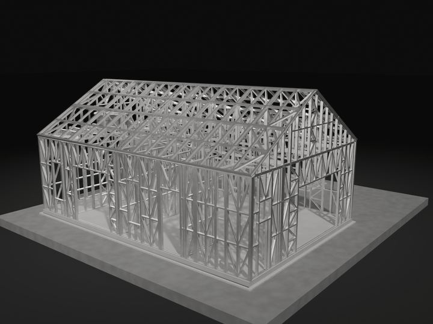
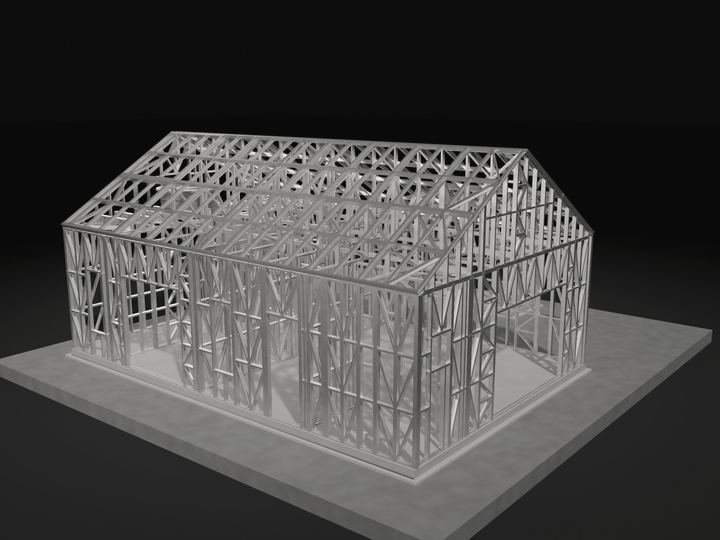
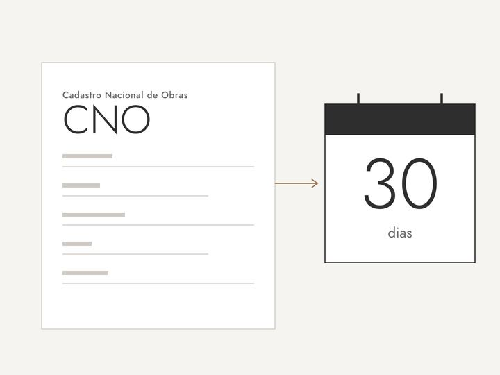
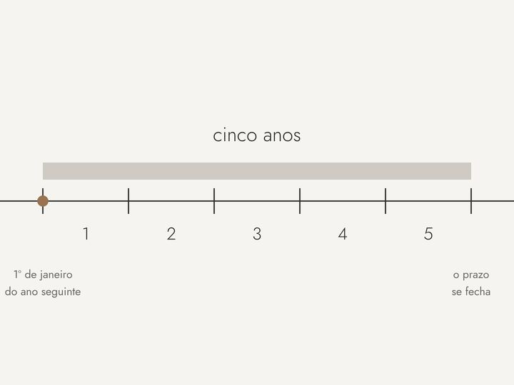
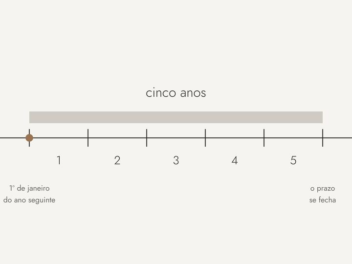
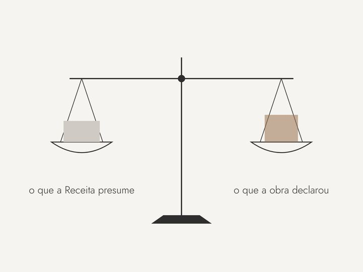
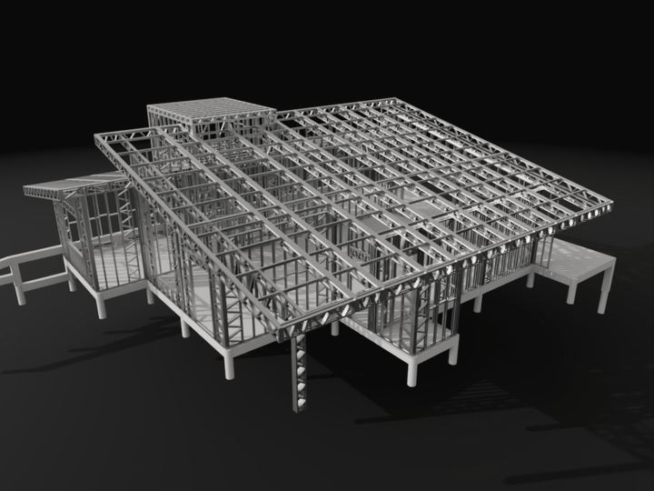
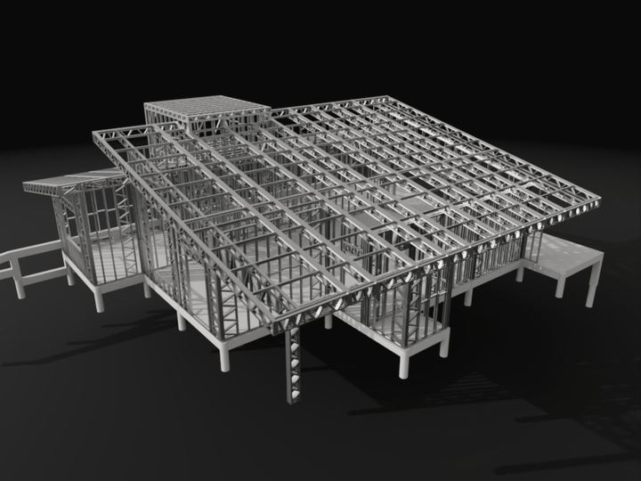
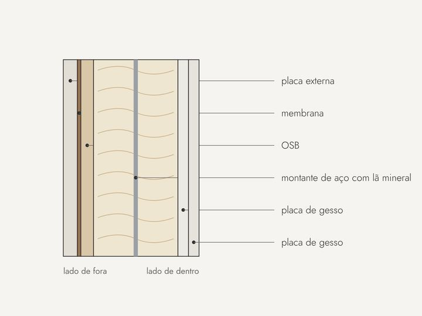

Perguntas de quem vai construir, respondidas direto ao ponto.
O imposto da obra, em primeiro lugar. Depois, steel frame. Um minuto cada.


impostoSteel frame paga menos INSS?A norma não cita o sistema, mas descreve o que ele é.
impostoCNO: quem inscreve a obra e em que prazoO prazo de 30 dias e por que a inscrição define o imposto.

impostoConstruí há mais de cinco anos. Ainda devo INSS?O prazo existe. O que decide é a prova da data.

impostoFator de ajuste: quando a aferição fecha em zeroA regra que fecha a aferição sem débito para quem declarou a mão de obra.

steel frameSteel frame é mais caro?O que a planilha mostra e o que ela deixa de fora.